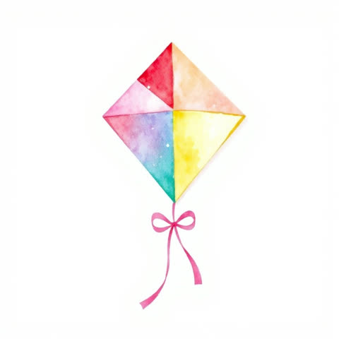
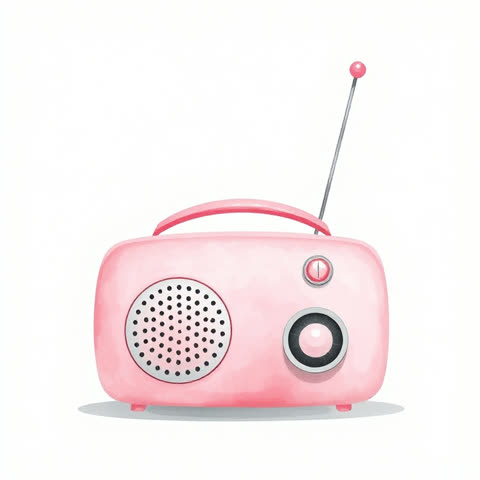
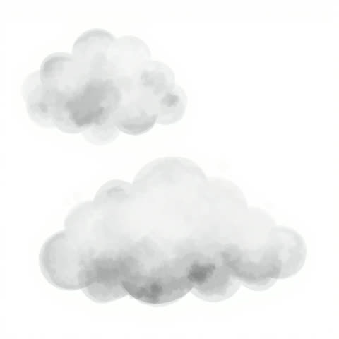
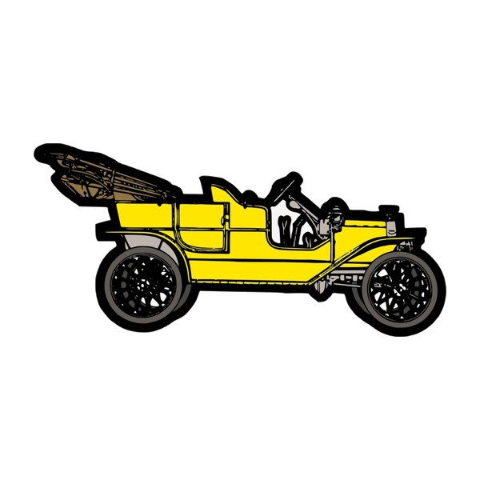
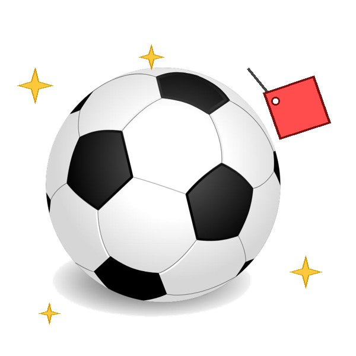

Kite, bike, radio: пишемо!
Додаткове завдання до уроку It's his kite (Fly High 2, стор. 50). Слова: kite, bike, radio, cloudy, old, new.
Знадобиться звичайний зошит у лінію і олівці (не робочий зошит Fly High). Завдання 1 і 2 — дитина пише слова в зошит, завдання 3 — малює й підписує. Разом 15–20 хвилин.
Завдання 1. Розплутай слово
Літери переплуталися! Подивись на картинку і натискай літери по черзі. Потім напиши слово в зошит двічі.






Завдання 2. Послухай і напиши
Натисни 🔊, послухай слово і напиши його в зошит. Потім натисни «Перевір себе».
bikeПомилився? Нічого страшного — виправ у зошиті й напиши слово ще раз.
Завдання 3. Намалюй і підпиши
Намалюй у зошиті щось старе і щось нове — що захочеш — і підпиши, як у прикладі. Натисни 🔊 і прочитай вголос.
Наприклад: ball, doll, car, robot, kite, bike, bag. Пам'ятай: an old, але a new.